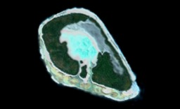
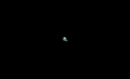
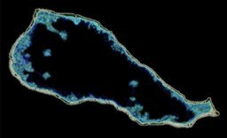
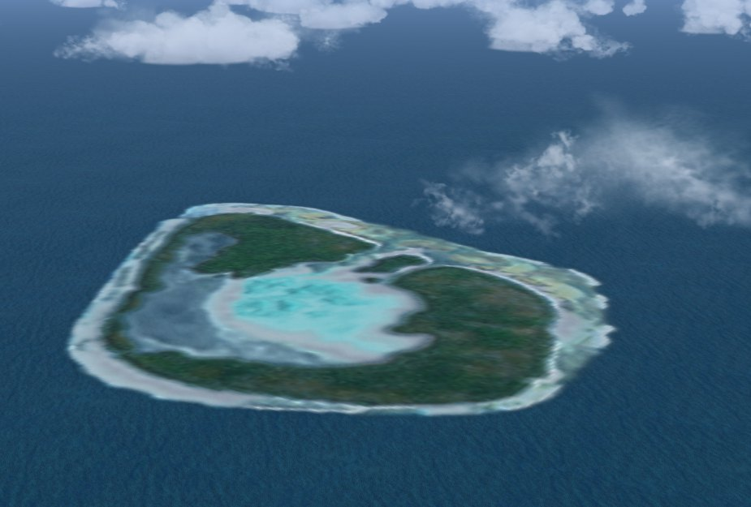

French Polynesia Tuamotu Archipelago FS9/FSX Addon Scenery
Group D
Tehuata

Tehuata is a very small atoll.
However, I took pains very much to design this scenery.
The pass that connects the lagoon to open water exists in the south of the island.
Very shallow lagoon seems to exist in the center of the atoll.
In my scenery,
there are the waters a little turbid in the northeast side of the lagoon.
This part seemed not the land area but a part of the lagoon to me.
Or, it might be a part where not the waters
but the corals have upheaved on the surface of the sea.
When I designed this scenery, I used the satellite image as former data.
I was not able to find it
though I looked for the data of the atoll taken from a different angle.
After having designed the scenery to the last minute,
this turbid waters were the mysteries to me.
I thought the gray zone along the NE of lagoon was turbit water. However, Dr. Kepler pointed out that the gray zone is not a swamp but a dried zone.
Dr. Angela Kay Kepler answered my question about "turbid waters".
Tehuata Atoll's lagoon is filling in with coral, sediment, sand. This is why you only see a small area of turquoise water in the middle (sandy shallows). With a few rounded areas of darker turquoise that are a bit deeper.
The next band outside this is pinkish, probably a mixture of coral sand (with pink microscopic shells from Foraminifera, once alive in then lagoon) and fresh coral rubble, still of a yellowish-brown color.
The next band outwards is gray. The gray "turbid" is narrow, then medium, then large. This is two things:
1. OLD CORAL RUBBLE.
Bleached by the sun. It has gray blue-green algae in it. this is very typical of lagoons that have been a long time without water. You used the word "turbid" but this is not water. It's dry. Either crunchy (in which case it's coral) or kind-of spongy (in which case it's seabird guano, see below).
You can see the same color on the seaward side but it's not so obvious. That's very old coral.
2. OLD SEABIRD GUANO.
Tehuata is one of the oldest of the Tuamotu Archipelago, it looks like to me. I have no information on it. The gray area here may have phosphate content too from seabird guano. Tehuata has a sizable area of land, a lot with native trees (coconuts are a brighter green), so there would have been thousands of seabirds such as Great Frigatebirds, Red-footed Boobies, Black and Brown Noddy Terns. They ate lots of fish from the ocean so pooped at lot in the lagoon.
See how the gray area extends NW from all those trees in the south, up to the NE part of the atoll? The gray color inside the forest boundaries indicates guano mixed with small pieces of old coral rubble. As it moved NW into the lagoon (by SE Trades), it "muddied" up the lagoon, then as the lagoon dried up, so did the guano deposits.
In summary, your "mystery turbid waters" are most likely fine gray coral rubble (with gray blue-green algae) mixed with dry guano deposits from seabirds (since the island is uninhabited, seabirds may still exist there).
Dr. Kepler, Thanks very much for your precise comment.

Size of Tehuata relative to Rangiroa

Size of Tehuata relative to Rangiroa
A view of the northeast

A view of the northeast